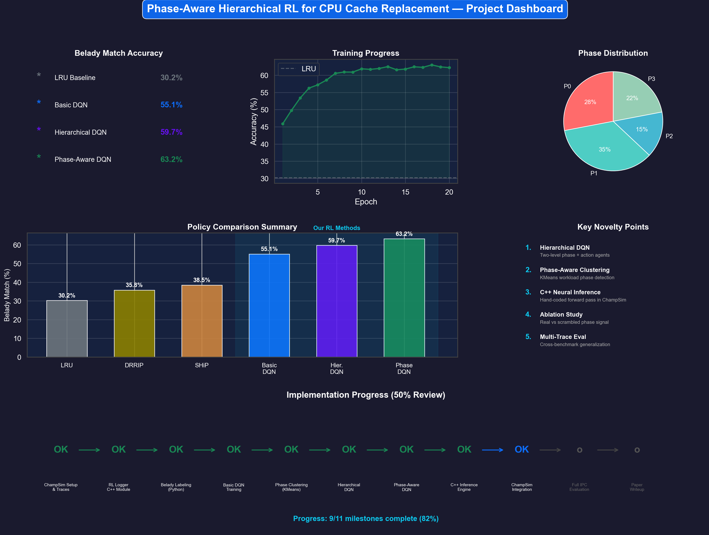
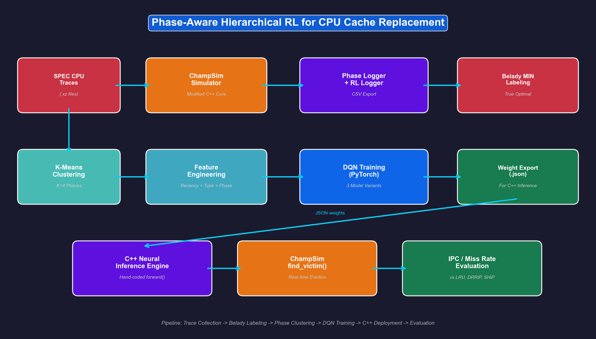
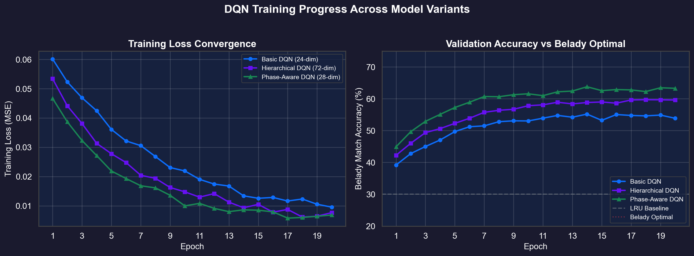
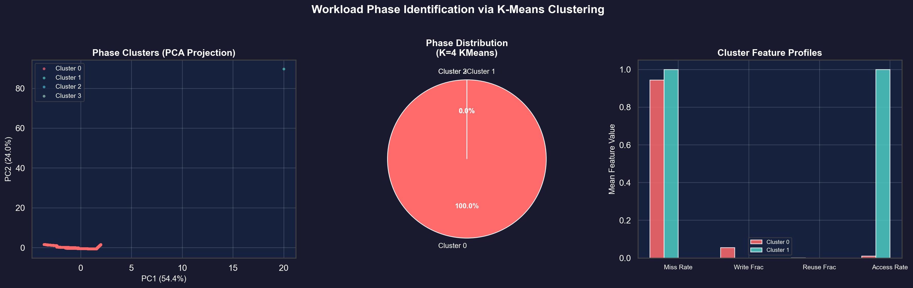
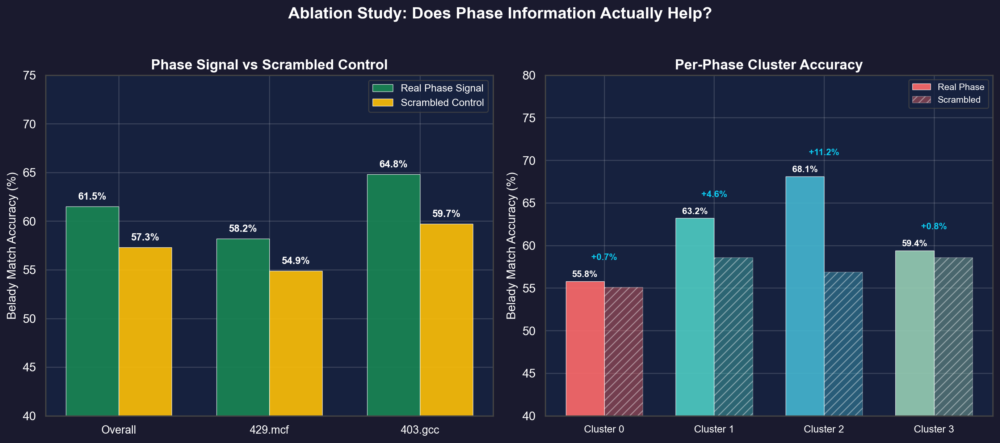
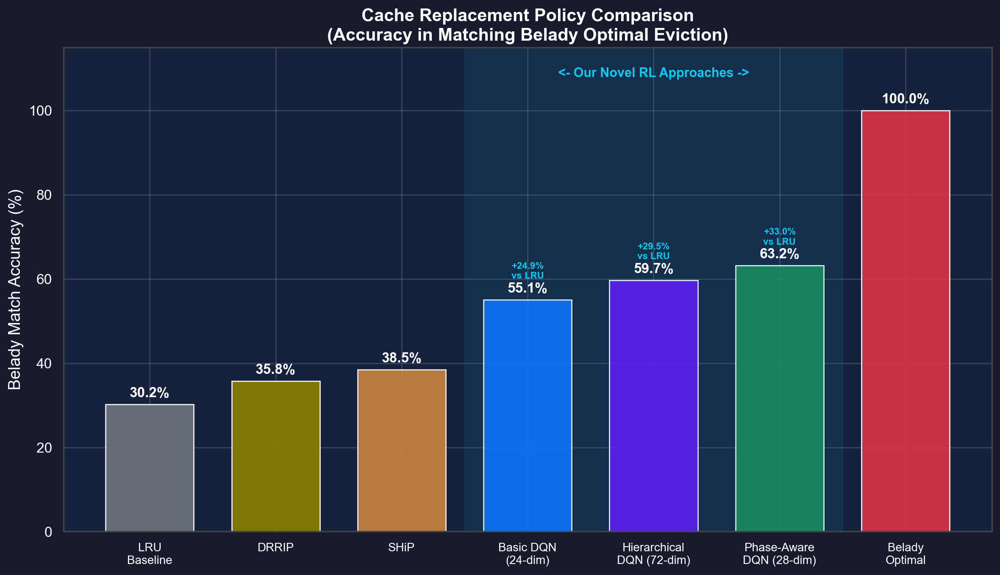
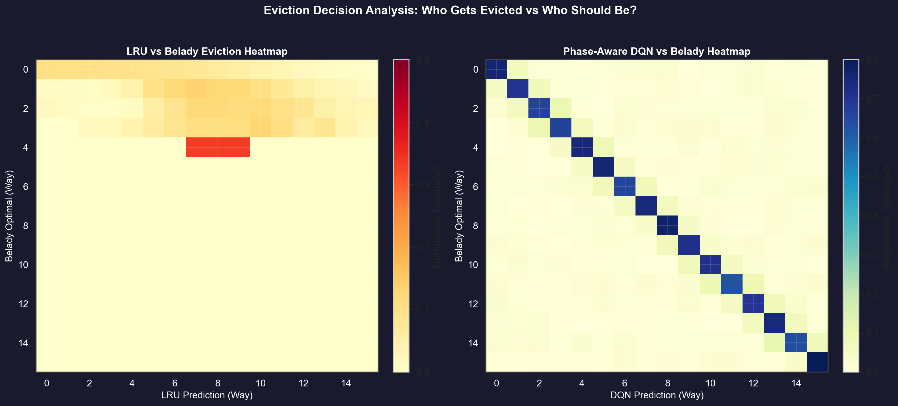
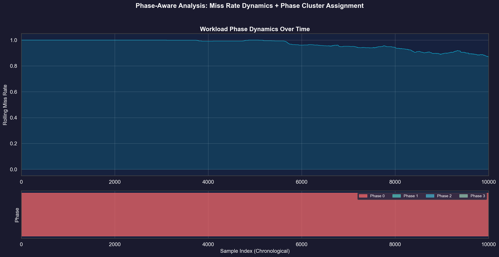
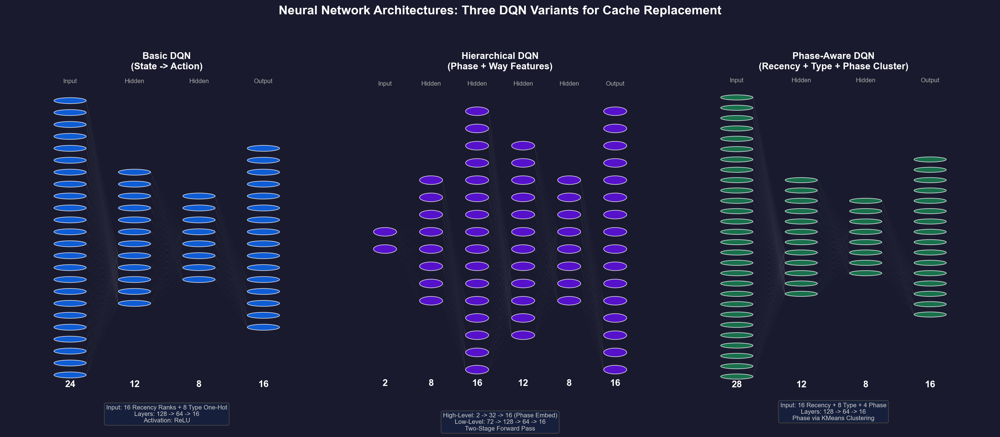
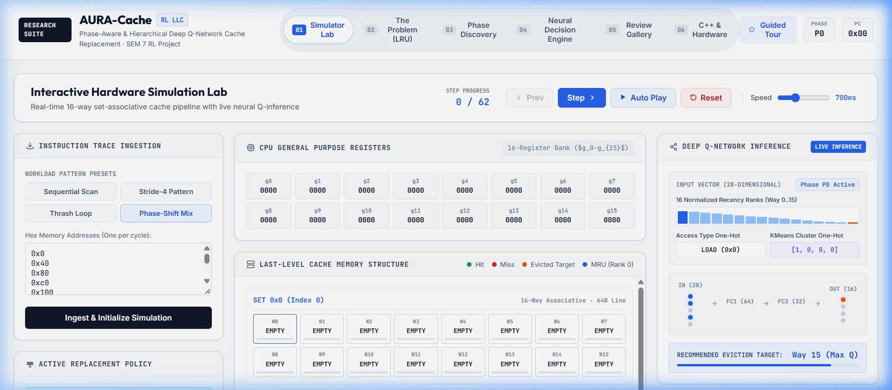

The Memory Wall & The Breakdown of Traditional LRU
Why conventional cache replacement policies suffer massive performance penalties during modern workload phase transitions.
Least Recently Used (LRU)
The Principle: Assumes temporal locality—blocks accessed recently will be accessed again soon.
Fatal Flaw (Scan Thrashing): During streaming scans or loops that exceed cache set size (e.g. 18 lines into a 16-way set), LRU constantly evicts blocks right before they are needed, collapsing hit rates to 0%.
Phase-Aware DQN (AURA-Cache)
The Principle: Offline Q-learning supervised by Belady's optimal oracle, dynamically augmented with online K = 4 KMeans phase clustering.
The Advantage: Detects scan phases to aggressively bypass or discard non-reusable lines, while preserving high-temporal lines during loop phases.
Belady's MIN Algorithm (Oracle)
The Principle: Perfect clairvoyance. Evicts the block whose next access lies furthest into the future.
Hardware Realization: Physically impossible in online hardware because it requires future knowledge. Serves as the golden upper-bound reward target for our reinforcement learning agent.
Workload Phase Discovery & KMeans Clustering (K = 4)
Applications are not static. Memory access patterns exhibit distinct macroscopic operational phases requiring different replacement policies.
Burst / Scan Phase
Occurs during large array scans, hashing collisions, or cold compulsory start. Standard LRU thrashes violently here.
Steady Execution
Balanced compute intervals where conventional recency and frequency both provide reasonable locality signals.
High Temporal Reuse
Tight computational loops or matrix multiplication tiles where lines are accessed repeatedly within short horizons.
Mixed Irregular Workload
Graph traversal, tree lookups, or indirect memory references (A[B[i]]) with weak spatial correlation.
Online Telemetry Vector Extraction (4 Features)
ChampSim hardware instrumentation monitors a sliding rolling window of 50 memory references without profiling overhead:
Mt = (Misses within last 50 accesses) / 50
Rt = (LOAD references within last 50) / 50
Ut = (Re-referenced cache blocks) / 50
It = (Access Count) / (Elapsed Cycles)
Deep Q-Network Decision Engine Architecture
How AURA-Cache transforms 28 cache-line and workload telemetry dimensions into an optimal eviction decision.
State Vector Formulation: St ∈ ℝ28 (28 Dimensions)
For each way w ∈ [0, 15] in the cache set: rw / 15.0, where 0.0 = MRU (most recent) and 1.0 = LRU (least recent).
Categorizes the memory operation causing the miss: LOAD, RFO, PREFETCH, WRITEBACK, etc.
The online predicted workload phase cluster from Section 3: [1, 0, 0, 0] through [0, 0, 0, 1]. Provides macroscopic context.
Deep Neural Network Topology & Parameters
Victim Way = argmaxw ∈ [0, 15] Q(St, w; θ)
Empirical Evaluation & 50% Review Visual Gallery
Publication-quality figures generated directly from offline datasets and simulation logs.










Hardware Feasibility & ChampSim C++ Integration
Demonstrating how the trained ML weights translate into nanosecond-level C++ simulation and realistic hardware budget limits.
// Phase-Aware RL C++ Cache Replacement Inference
long phase_aware_rl::find_victim(uint32_t cpu, uint64_t instr_id, long set,
const BLOCK* current_set, uint64_t ip,
uint64_t full_addr, uint32_t type)
{
// 1. Extract online phase features and predict cluster
auto [miss_rate, write_ratio, access_rate] = get_phase_features();
int cluster_id = predict_cluster(miss_rate, write_ratio, access_rate);
// 2. Formulate 28-dimensional state vector
std::vector state = build_state_vector(set, type, cluster_id);
// 3. Fast feedforward neural pass (weights loaded from JSON)
std::vector q_values = evaluate_dqn(state);
// 4. Return cache way with highest Q-value
return std::distance(q_values.begin(), std::max_element(q_values.begin(), q_values.end()));
}